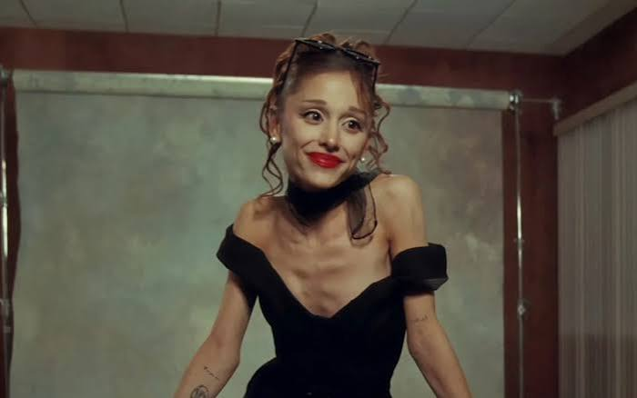

Meu primeiro post
Por: Pyetra Hawanny
Bem Vindos ao meu mais novo blog! Aqui irei falar novidades e curiosidades do mundo da musica.
Irei compartilhar dicas parta iniciantes no mundo da musica, além de curiosidades e novidades
Por: Pyetra Hawanny
Bem Vindos ao meu mais novo blog! Aqui irei falar novidades e curiosidades do mundo da musica.
Por: Pyetra Hawanny
Líder comenta que as pessoas escutam as musicas para dormir, dançar...etc, ele diz que as musicas deles servem para muitas coisas..
Fonte: Jornal Opção

Por: Pyetra Hawanny
Antes de introduzir por completo esse assunto, deverimos analisar se falar sobre o corpo de outro pessoa é tão ético assim! Será que ela mesmo não se sinta desconfortavel com esses tipos de comentarios sobre o corpo dela? Mesmo ela sendo uma figura pública, nós como fãns devemos ter a noção de pensar antes de falar, até por que se fosse qualquer um de nós no lugar dela, não ireriamos gostar.

Por: Pyetra Hawanny
A banda MY CHEMICAL ROMANCE, a favorita de varias garotas emo, e outras vertentes alternativas ganha fama a cada momento não deixem de conferiar musicas do link abaixo dessa banda maravilhosa